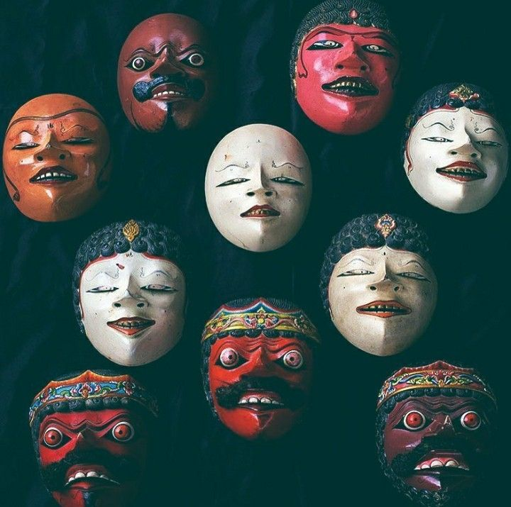
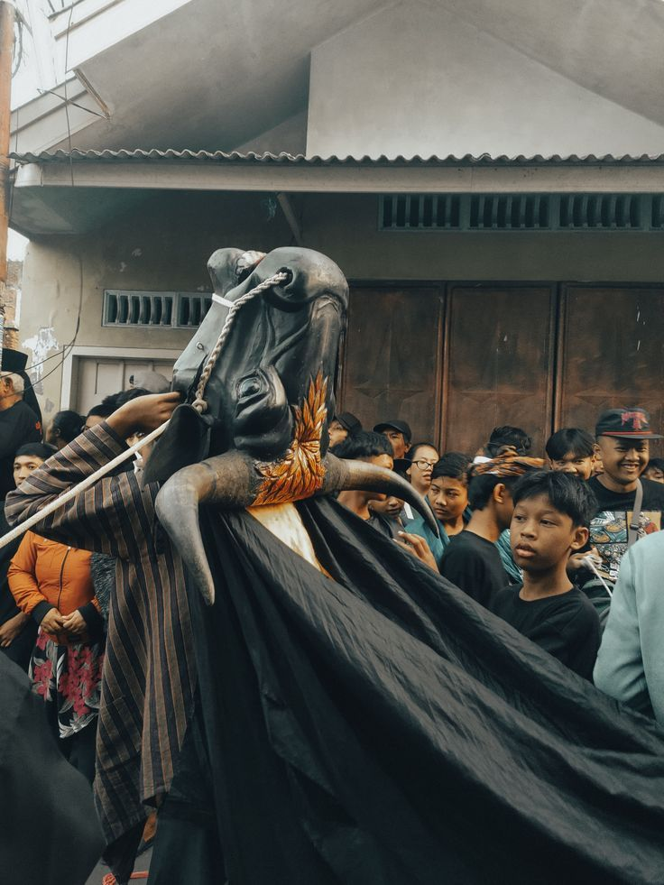
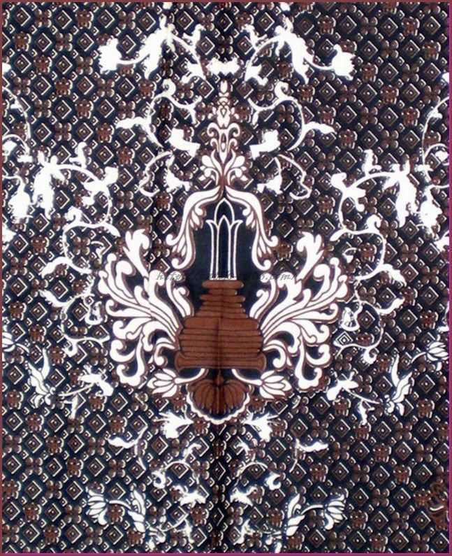

Apa itu Topeng Malangan?
Setiap topeng punya warna dan raut wajah berbeda untuk menggambarkan watak tokoh — merah untuk gagah berani, putih untuk kelembutan.

Mengenal Kerajaan Singasari
Kerajaan yang berjaya di abad ke-13 ini meninggalkan jejak berupa candi dan cerita Ken Arok yang melegenda.

Kesenian Bantengan, dari Mana Asalnya?
Tarian yang meniru gerak banteng ini awalnya berkembang di kalangan masyarakat lereng gunung sebagai ritual tolak bala.

Motif Batik Malangan
Motif seperti Kembang Kertas terinspirasi dari kekayaan alam dan legenda lokal, berbeda dari batik daerah lain.
Tahukah kamu?
Wayang Topeng Malang sudah dipentaskan sejak masa Kerajaan Singasari, menjadikannya salah satu seni topeng tertua di Jawa.